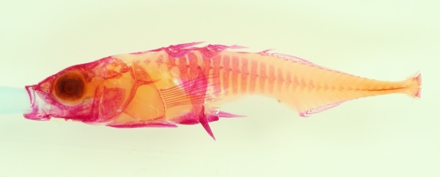
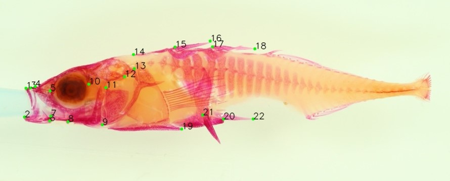

Example 2: Stickleback morphometrics - landmarks¶
Functional morphology of organisms is often measured by placing landmarks at specific points that show structural, functional or developmental significance. In this example phenopype is used to place morphometric landmarks across the anterior half of a stickleback (Gasterosteus aculeatus) stained with alizarin red.
First we place landmarks in low throughput mode to learn how the landmark-function works, then we look at a high throughput landkmark example with a project directory and a global scale.

Input - Stained threespine stickleback, photographed in a glycerol bath from a camera stand

Results - 22 landmarks are placed using the landmark tool from the phenopype.measurements module
Low throughput¶
[1]:
import phenopype as pp
[2]:
filepath = r"images/stickle1.jpg"
image, img_data = pp.load_image(filepath,
df=True)
pp.show_image(image)
Start by playing a few test landmarks:
[3]:
df_landmarks = pp.measurement.landmarks(image,
point_size=15,
point_colour="green",
label_size=1)
- setting landmarks
The landmark function does not manipulate the image, but instead returns a dataframe with the landmark coordinates. To create an image with the selected points, we first need te select the background image (or “canvas”) with select_canvas. This can be the raw image (“raw”), its grayscale version (“gray”), or any of the separate colour channels (“r”, “g”, “b”). We then use the draw_landmarks function to draw the landmarks onto the canvas. These explicit steps are necessary when using the
low throughput, but not the high throughput routine (see below).
[4]:
canvas = pp.visualization.select_canvas(image, canvas="raw")
## draw landmarks on canvas (point colour and size can be redefined here)
canvas = pp.visualization.draw_landmarks(canvas, df_landmarks=df_landmarks, point_size=15,
point_colour="red",
label_size=2)
pp.show_image(canvas)
- raw image
We also have to explicitly save the landmarks, and the canvas:
[5]:
pp.export.save_landmarks(df_landmarks, dirpath=r"_temp/output/ex2") ## save landmarks as csv to folder
pp.export.save_canvas(canvas, dirpath=r"_temp/output/ex2") ## also save canvas for quality control
- landmarks saved under _temp/output/ex2\landmarks.csv (overwritten).
- canvas saved under _temp/output/ex2\canvas.jpg (overwritten).
Adding a reference scale¶
Now we will map a reference card so we can adjust our landmark coordinate space. This is important if for example the distance between the camera and your sample changes.

After loading the reference image, we measure the distance on the millimeter scale (click on two points inside the image), enter the distance (e.g. 10 mm), and then we create a template by dragging a rectangle around the whole (!) reference card. Finish each step with “enter”.
[6]:
import phenopype as pp
ref_path = r"images/stickleback_side.jpg"
filepath = r"images/stickle1.jpg"
ref_image = pp.load_image(ref_path)
ref_ratio, df_masks, template_img = pp.preprocessing.create_reference(ref_image,
template=True)
- measure pixel-to-mm-ratio
Reference set
- add column length
Template selected
In the next step, we load the sample image again. The find_scale uses a classic machine learning algorithm to find the scale inside our already processed image.
[7]:
filepath = r"images/stickle1.jpg"
image, img_data = pp.load_image(filepath,
df=True)
img_data, masks, _ = pp.preprocessing.detect_reference(image,
img_data,
template_image=template_img,
template_px_mm_ratio=ref_ratio)
---------------------------------------------------
Reference card found with 262 keypoint matches:
template image has 37.210885504110216 pixel per mm.
current image has 36.0 pixel per mm.
= 96.814 % of template image.
---------------------------------------------------
[8]:
img_data
[8]:
| filename | width | height | current_px_mm_ratio | |
|---|---|---|---|---|
| 0 | stickle1.jpg | 2400 | 1600 | 36.0 |
This was successful - we see that the reference card found in the image has only ~ 96 % if the size of the card we marked in the template image.
Enter some data¶
For high data quality it is important to verify the ID of the specimen in the current picture. Often, the picture name contains the ID, but typically an label is placed inside the image. Using the enter_data tool we open the image and an entry prompt that will create a column with a name of our chosing inside all exported results:
[9]:
img_data = pp.preprocessing.enter_data(image,
img_data,
columns="ID")
- add column ID
Now we place our landmarks again. The resulting csv now contains a column for the pixel-to-mm-ratio from the scale we detected.
[10]:
df_landmarks = pp.measurement.landmarks(image,
point_size=15,
point_colour="green",
label_size=1,
overwrite=True)
- setting landmarks
[11]:
canvas = pp.visualization.select_canvas(image, canvas="raw")
canvas = pp.visualization.draw_landmarks(canvas, df_landmarks, point_size=15, point_colour="green", label_size=1)
## detected reference
canvas = pp.visualization.draw_masks(canvas, df_masks=masks)
- raw image
drawing mask: reference
[12]:
pp.show_image(canvas)
[13]:
pp.export.save_landmarks(df_landmarks, dirpath=r"_temp/output/ex2")
pp.export.save_canvas(canvas, dirpath=r"_temp/output/ex2")
- landmarks saved under _temp/output/ex2\landmarks.csv (overwritten).
- canvas saved under _temp/output/ex2\canvas.jpg (overwritten).
High throughput¶
ow we will use the high throughput workflow function to place landmarks - first on a single file, and then from within a Phenopype project. For more information on how to analyze multiple images and whole datasets with this approach, check Tutorials 3 and Tutorial 4.
The pype method opens the image and a text editor with the pype configuration file. Any change to the configuration file, in this case the point size for landmarks, will be immediately applied to the image.
[14]:
import phenopype as pp
import os
[15]:
pp.pype_config_templates
[15]:
{'demo.yaml': 'd:\\workspace\\git\\phenopype\\phenopype\\templates\\demo.yaml',
'ex1.yaml': 'd:\\workspace\\git\\phenopype\\phenopype\\templates\\ex1.yaml',
'ex2.yaml': 'd:\\workspace\\git\\phenopype\\phenopype\\templates\\ex2.yaml',
'ex3.yaml': 'd:\\workspace\\git\\phenopype\\phenopype\\templates\\ex3.yaml',
'ex5_1.yaml': 'd:\\workspace\\git\\phenopype\\phenopype\\templates\\ex5_1.yaml',
'ex5_2.yaml': 'd:\\workspace\\git\\phenopype\\phenopype\\templates\\ex5_2.yaml',
'ex6.yaml': 'd:\\workspace\\git\\phenopype\\phenopype\\templates\\ex6.yaml',
'ex7.yaml': 'd:\\workspace\\git\\phenopype\\phenopype\\templates\\ex7.yaml',
'ex8_1.yaml': 'd:\\workspace\\git\\phenopype\\phenopype\\templates\\ex8_1.yaml',
'ex8_2.yaml': 'd:\\workspace\\git\\phenopype\\phenopype\\templates\\ex8_2.yaml',
'landmarks1.yaml': 'd:\\workspace\\git\\phenopype\\phenopype\\templates\\landmarks1.yaml',
'landmarks2.yaml': 'd:\\workspace\\git\\phenopype\\phenopype\\templates\\landmarks2.yaml',
'tut3.yaml': 'd:\\workspace\\git\\phenopype\\phenopype\\templates\\tut3.yaml'}
[16]:
pp.show_config_template("ex2")
SHOWING BUILTIN PHENOPYPE TEMPLATE ex2.yaml
- preprocessing:
- detect_reference
- enter_data
- measurement:
- landmarks:
point_size: 12
point_colour: green
label_size: 2
label_width: 2
- visualization:
- draw_masks
- draw_landmarks:
point_size: 12
point_colour: green
label_size: 2
label_width: 2
- export:
- save_landmarks
- save_masks
- save_data_entry
The pype can be used on single images by supplying a filepath. Run the pype function, go to the output dirpath, and check the collected results.
[17]:
filepath = r"images/stickle1.jpg" # works
## dirpath specifies a directory where all results are saved
pp.pype(filepath,
name="lm1",
template="ex2",
dirpath=r"_temp/output/ex2")
Directory to save phenopype-container output set to parent folder of image:
D:\workspace\git\phenopype\tutorials\images
pype_config_lm1.yaml already exists - overwrite?
y: yes, file will be overwritten and loaded
n: no, existing file will be loaded instead
To load an existing file, use "config" instead of "template".y
New pype configuration created (ex2.yaml) from phenopype template:
d:\workspace\git\phenopype\phenopype\templates\ex2.yaml
------------+++ new pype iteration 2021:05:10 15:37:15 +++--------------
=== AUTOLOAD ===
- columns ID from attributes.yaml
- landmarks_lm1.csv
- masks_lm1.csv
PREPROCESSING
detect_reference
- reference information missing - abort
preprocessing.detect_reference: UnboundLocalError - local variable 'detected_px_mm_ratio' referenced before assignment
enter_data
- column ID already created (overwrite=False)
MEASUREMENT
landmarks
- landmarks already set (overwrite=False)
VISUALIZATION
- modifed image
- autoselect canvas
draw_masks
draw_landmarks
EXPORT
save_landmarks
- landmarks saved under _temp/output/ex2\landmarks_lm1.csv (overwritten).
save_masks
- masks saved under _temp/output/ex2\masks_lm1.csv (overwritten).
save_data_entry
- add column ID (overwriting)
=== AUTOSAVE ===
save_canvas
- canvas saved under _temp/output/ex2\canvas_lm1.jpg (overwritten).
------------+++ finished pype iteration +++--------------
-------(End with Ctrl+Enter or re-run with Enter)--------
------------+++ new pype iteration 2021:05:10 15:37:23 +++--------------
Nothing loaded.
PREPROCESSING
detect_reference
- reference information missing - abort
preprocessing.detect_reference: UnboundLocalError - local variable 'detected_px_mm_ratio' referenced before assignment
enter_data
- column ID already created (overwrite=False)
MEASUREMENT
landmarks
- landmarks already set (overwrite=False)
VISUALIZATION
- modifed image
- autoselect canvas
draw_masks
draw_landmarks
EXPORT
save_landmarks
- landmarks saved under _temp/output/ex2\landmarks_lm1.csv (overwritten).
save_masks
- masks saved under _temp/output/ex2\masks_lm1.csv (overwritten).
save_data_entry
- add column ID (overwriting)
=== AUTOSAVE ===
save_canvas
- canvas saved under _temp/output/ex2\canvas_lm1.jpg (overwritten).
------------+++ finished pype iteration +++--------------
-------(End with Ctrl+Enter or re-run with Enter)--------
TERMINATE
[17]:
<phenopype.main.pype at 0x25dca7e7e48>
We will now use the pype function together with files organized within a phenopype project. We start with providing some paths, and including select images into the project (i.e. all stickleback images).
[18]:
## relative from now (phenopype-master/tutorials)
project_root = r"_temp/output/ex2_project"
## relative from project root directory (phenopype-master/_temp/project)
image_dir = "images"
reference_image = "images/stickleback_side.jpg"
[19]:
myproj = pp.project(root_dir=project_root)
--------------------------------------------
Phenopype will create a new project at
D:\workspace\git\phenopype\tutorials\_temp\output\ex2_project
Proceed? (y/n)
y
Warning - project root_dir already exists - overwrite? (y/n)y
"D:\workspace\git\phenopype\tutorials\_temp\output\ex2_project" created (overwritten)
project attributes written to D:\workspace\git\phenopype\tutorials\_temp\output\ex2_project\attributes.yaml
--------------------------------------------
First we add the image files in the directory, but only “stickle1”, “stickle2”, and “stickle3”. Then we add the appropriate configuration file. As for the other examples I have created a template (“ex2”) with appropriate settings, which is passed to the pype using template="ex2".
[20]:
myproj.add_files(image_dir=image_dir,
include="stickle",
exclude=["side","top"])
myproj.add_config(name = "lm2",
template="ex2")
--------------------------------------------
phenopype will search for image files at
D:\workspace\git\phenopype\tutorials\images
using the following settings:
filetypes: ['jpg', 'JPG', 'jpeg', 'JPEG', 'tif', 'png', 'bmp'], include: stickle, exclude: ['side', 'top'], mode: copy, recursive: False, resize: False, unique: path
Found image stickle1.JPG - phenopype-project folder 0__stickle1 created
Found image stickle2.JPG - phenopype-project folder 0__stickle2 created
Found image stickle3.JPG - phenopype-project folder 0__stickle3 created
Found 3 files
--------------------------------------------
New pype configuration created (ex2.yaml) from phenopype template:
d:\workspace\git\phenopype\phenopype\templates\ex2.yaml
pype_lm2.yaml created for 0__stickle1
pype_lm2.yaml created for 0__stickle2
pype_lm2.yaml created for 0__stickle3
Now we again set scale, but this time we pass on the information to all images included in the project. Afterwards, we save the project (to the root folder).
[21]:
myproj.add_reference(name="lm2",
reference_image=reference_image,
template=True,
overwrite=True)
Reference image loaded from images/stickleback_side.jpg
- measure pixel-to-mm-ratio
Reference set
- add column length
Template selected
Reference image saved under D:\workspace\git\phenopype\tutorials\_temp\output\ex2_project\reference_lm2.tif
Reference image saved under D:\workspace\git\phenopype\tutorials\_temp\output\ex2_project\reference_template_lm2.tif
Saved reference info to project attributes.
setting active reference to "lm2" for 0__stickle1 (active=True)
setting active reference to "lm2" for 0__stickle2 (active=True)
setting active reference to "lm2" for 0__stickle3 (active=True)
[22]:
pp.project.save(myproj)
Project data saved under D:\workspace\git\phenopype\tutorials\_temp\output\ex2_project\project.data.
[23]:
## if you have already run above cell you can load your project using "project.load":
# myproj = pp.project.load(r"_temp/project/project.data") ## run this if you
After creating the project files, we can run the pype routine with a simple loop on myproj.dirpaths, which is a list of all project directories that contain the copied raw images and the config files we generated before.
Move on to the next image with Ctrl+Enter, interrupt the loop with Esc. To resume to the point where you left, add the skip argument so directory with processed files are not run again.
[24]:
for dirpath in myproj.dirpaths:
out = pp.pype(dirpath, name="lm2", skip=True)
Succesfully loaded existing pype config (pype_config_lm2.yaml) from:
D:\workspace\git\phenopype\tutorials\_temp\output\ex2_project\data\0__stickle1\pype_config_lm2.yaml
------------+++ new pype iteration 2021:05:10 15:38:13 +++--------------
=== AUTOLOAD ===
- project level reference information loaded for lm2
- reference template image loaded from root directory
PREPROCESSING
detect_reference
---------------------------------------------------
Reference card found with 251 keypoint matches:
template image has 36.90121949204389 pixel per mm.
current image has 35.7 pixel per mm.
= 96.802 % of template image.
---------------------------------------------------
enter_data
- add column ID
MEASUREMENT
landmarks
- setting landmarks
VISUALIZATION
- modifed image
- autoselect canvas
draw_masks
drawing mask: reference
draw_landmarks
EXPORT
save_landmarks
- landmarks saved under D:\workspace\git\phenopype\tutorials\_temp\output\ex2_project\data\0__stickle1\landmarks_lm2.csv.
save_masks
- masks saved under D:\workspace\git\phenopype\tutorials\_temp\output\ex2_project\data\0__stickle1\masks_lm2.csv.
save_data_entry
- add column ID
=== AUTOSAVE ===
save_canvas
- canvas saved under D:\workspace\git\phenopype\tutorials\_temp\output\ex2_project\data\0__stickle1\canvas_lm2.jpg.
save_reference
lm2
- save reference to attributes
------------+++ finished pype iteration +++--------------
-------(End with Ctrl+Enter or re-run with Enter)--------
------------+++ new pype iteration 2021:05:10 15:38:23 +++--------------
=== AUTOLOAD ===
- project level reference information loaded for lm2
- reference template image loaded from root directory
PREPROCESSING
detect_reference
- reference already detected (overwrite=False)
enter_data
- column ID already created (overwrite=False)
MEASUREMENT
landmarks
- landmarks already set (overwrite=False)
VISUALIZATION
- modifed image
- autoselect canvas
draw_masks
drawing mask: reference
draw_landmarks
EXPORT
save_landmarks
- landmarks saved under D:\workspace\git\phenopype\tutorials\_temp\output\ex2_project\data\0__stickle1\landmarks_lm2.csv (overwritten).
save_masks
- masks saved under D:\workspace\git\phenopype\tutorials\_temp\output\ex2_project\data\0__stickle1\masks_lm2.csv (overwritten).
save_data_entry
- add column ID (overwriting)
=== AUTOSAVE ===
save_canvas
- canvas saved under D:\workspace\git\phenopype\tutorials\_temp\output\ex2_project\data\0__stickle1\canvas_lm2.jpg (overwritten).
save_reference
lm2
- save reference to attributes (overwriting)
------------+++ finished pype iteration +++--------------
-------(End with Ctrl+Enter or re-run with Enter)--------
TERMINATE
Succesfully loaded existing pype config (pype_config_lm2.yaml) from:
D:\workspace\git\phenopype\tutorials\_temp\output\ex2_project\data\0__stickle2\pype_config_lm2.yaml
------------+++ new pype iteration 2021:05:10 15:38:27 +++--------------
=== AUTOLOAD ===
- project level reference information loaded for lm2
- reference template image loaded from root directory
PREPROCESSING
detect_reference
---------------------------------------------------
Reference card found with 222 keypoint matches:
template image has 36.90121949204389 pixel per mm.
current image has 35.7 pixel per mm.
= 96.631 % of template image.
---------------------------------------------------
enter_data
- add column ID
MEASUREMENT
landmarks
- setting landmarks
VISUALIZATION
- modifed image
- autoselect canvas
draw_masks
drawing mask: reference
draw_landmarks
EXPORT
save_landmarks
- landmarks saved under D:\workspace\git\phenopype\tutorials\_temp\output\ex2_project\data\0__stickle2\landmarks_lm2.csv.
save_masks
- masks saved under D:\workspace\git\phenopype\tutorials\_temp\output\ex2_project\data\0__stickle2\masks_lm2.csv.
save_data_entry
- add column ID
=== AUTOSAVE ===
save_canvas
- canvas saved under D:\workspace\git\phenopype\tutorials\_temp\output\ex2_project\data\0__stickle2\canvas_lm2.jpg.
save_reference
lm2
- save reference to attributes
------------+++ finished pype iteration +++--------------
-------(End with Ctrl+Enter or re-run with Enter)--------
------------+++ new pype iteration 2021:05:10 15:38:36 +++--------------
=== AUTOLOAD ===
- project level reference information loaded for lm2
- reference template image loaded from root directory
PREPROCESSING
detect_reference
- reference already detected (overwrite=False)
enter_data
- column ID already created (overwrite=False)
MEASUREMENT
landmarks
- landmarks already set (overwrite=False)
VISUALIZATION
- modifed image
- autoselect canvas
draw_masks
drawing mask: reference
draw_landmarks
EXPORT
save_landmarks
- landmarks saved under D:\workspace\git\phenopype\tutorials\_temp\output\ex2_project\data\0__stickle2\landmarks_lm2.csv (overwritten).
save_masks
- masks saved under D:\workspace\git\phenopype\tutorials\_temp\output\ex2_project\data\0__stickle2\masks_lm2.csv (overwritten).
save_data_entry
- add column ID (overwriting)
=== AUTOSAVE ===
save_canvas
- canvas saved under D:\workspace\git\phenopype\tutorials\_temp\output\ex2_project\data\0__stickle2\canvas_lm2.jpg (overwritten).
save_reference
lm2
- save reference to attributes (overwriting)
------------+++ finished pype iteration +++--------------
-------(End with Ctrl+Enter or re-run with Enter)--------
TERMINATE
Succesfully loaded existing pype config (pype_config_lm2.yaml) from:
D:\workspace\git\phenopype\tutorials\_temp\output\ex2_project\data\0__stickle3\pype_config_lm2.yaml
------------+++ new pype iteration 2021:05:10 15:38:38 +++--------------
=== AUTOLOAD ===
- project level reference information loaded for lm2
- reference template image loaded from root directory
PREPROCESSING
detect_reference
---------------------------------------------------
Reference card found with 260 keypoint matches:
template image has 36.90121949204389 pixel per mm.
current image has 35.7 pixel per mm.
= 96.765 % of template image.
---------------------------------------------------
enter_data
- add column ID
MEASUREMENT
landmarks
- setting landmarks
VISUALIZATION
- modifed image
- autoselect canvas
draw_masks
drawing mask: reference
draw_landmarks
EXPORT
save_landmarks
- landmarks saved under D:\workspace\git\phenopype\tutorials\_temp\output\ex2_project\data\0__stickle3\landmarks_lm2.csv.
save_masks
- masks saved under D:\workspace\git\phenopype\tutorials\_temp\output\ex2_project\data\0__stickle3\masks_lm2.csv.
save_data_entry
- add column ID
=== AUTOSAVE ===
save_canvas
- canvas saved under D:\workspace\git\phenopype\tutorials\_temp\output\ex2_project\data\0__stickle3\canvas_lm2.jpg.
save_reference
lm2
- save reference to attributes
------------+++ finished pype iteration +++--------------
-------(End with Ctrl+Enter or re-run with Enter)--------
TERMINATE
[ ]: